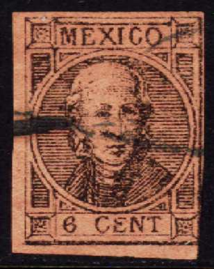
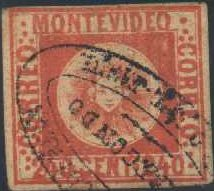

Return To Catalogue - Mexico overview
Note: on my website many of the
pictures can not be seen! They are of course present in the
catalogue;
contact me if you want to purchase it.
For issues of Mexico from before 1866, click here.
7 c grey 13 c blue 25 c yellow 50 c green
For the specialist, all values exist lithograped or engraved. I've seen privately rouletted stamps.
Value of the stamps |
|||
vc = very common c = common * = not so common ** = uncommon |
*** = very uncommon R = rare RR = very rare RRR = extremely rare |
||
| Value | Unused | Used | Remarks |
| Cheapest types | |||
| 7 c | RR | RR | Printed quantities: 55,000 lithographed and 3400 engraved stamps. |
| 13 c | *** | R | Printed quantities: 120,000 lithographed and 146000 engraved stamps. |
| 25 c | *** | *** | Printed quantities: 250,000 lithographed and 220,000 engraved stamps. |
| 50 c | R | R | Printed quantities: 70,000 lithographed and 37,000 engraved stamps. |
These stamps usually have the overprint of the district name, district number and date ('1866' or '866'), they also exist with number and date or with name only. A large number of the engraved remainders exist without any overprint at all: about 33,000 for the 7 c, 78,000 for the 13 c, 23,000 for the 25 c and 55,000 for the 50 c (source for the number of remainders and printed quantities http://www.regencystamps.com/Mexico.shtml).
(Probably remainders with no overprint)
Forgeries, example:
The letters are done quite clumsy in the above forgeries. The beard of the emperor is different and the cancels are strange. They were probably produced by the forger Spiro.
A forgery of the 25 c sold by Fournier:
I think the forgery of the 50 c is also made by Fournier (the others possibly as well).
Part of a page from a Fournier Album with these forgeries.
Other primitive forgeries:


A forgery of the 7 c with the "M" of
"MEXICANO" too far to the right.

I've been told that this is a proof..


6 c black on brown 12 c black on green 25 c blue 50 c black on yellow 100 c black on brown 100 c brown on brown (rare)
Two types seem to exist of these stamps; with small figures of value and with large figures of value followed by a dot. Info on the security overprints can be found at: http://overprints.stampsofmexico.org/Issues/1868_district_overprints.htm.
Value of the stamps |
|||
vc = very common c = common * = not so common ** = uncommon |
*** = very uncommon R = rare RR = very rare RRR = extremely rare |
||
| Value | Unused | Used | Remarks |
| 6 c | *** | *** | |
| 12 c | *** | *** | |
| 25 c | R | ** | |
| 50 c | RR | *** | |
| 100 c black on brown | RR | RR | |
| 100 c brown on brown | RRR | RRR | |
These stamps seem to exist with a 'Anotado' overprint, issued in 1872:

Forgeries exist (by the way, I'm not 100% sure that the above stamps are genuine). Examples of forgeries:




In my opinion, the "M" is too squeezed and the
"X" is not symmetric enough.
Another set of forgeries:


Note that these forgeries have exactly the same cancel as the 1858 issue of Uruguay: "BIMon DE
CORREOS ARREGONDO REP O. DEL URUG". Click
here for more information about this cancel.



Postal forgeries (to deceive the postal authorities) also exist, so-called Tipos, see: http://www.1868stamps.com/FRAUD/TIPOS.htm (link no longer working...)
(Example of a Tipo forgery)
For stamps issued after 1871 click here.


{kind=link}
{kind=link}
{kind=link}
{kind=link}